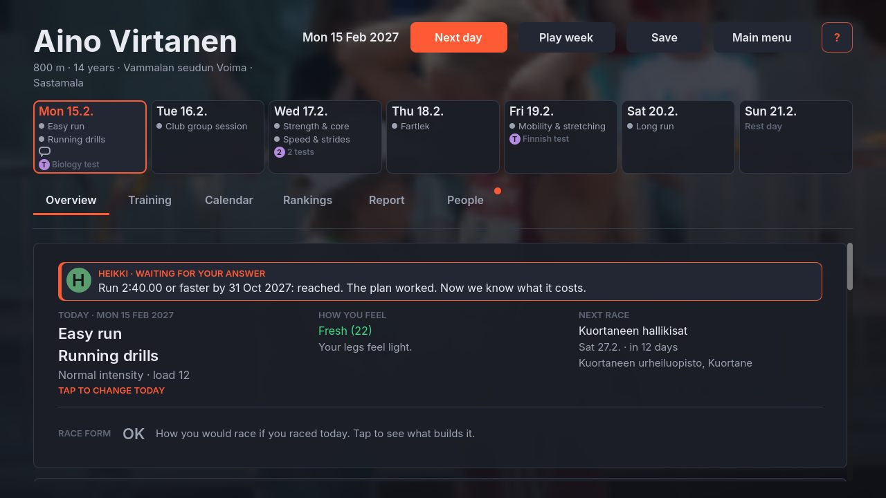
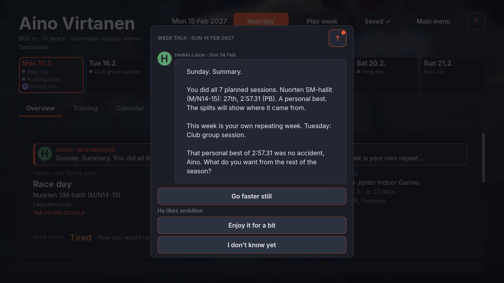
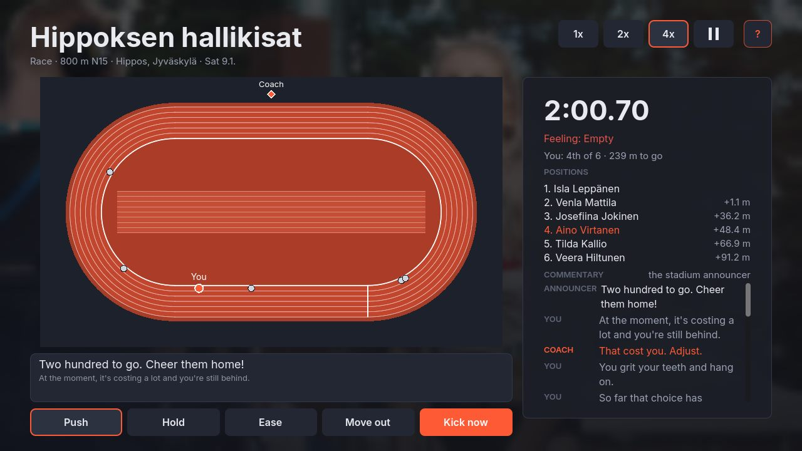
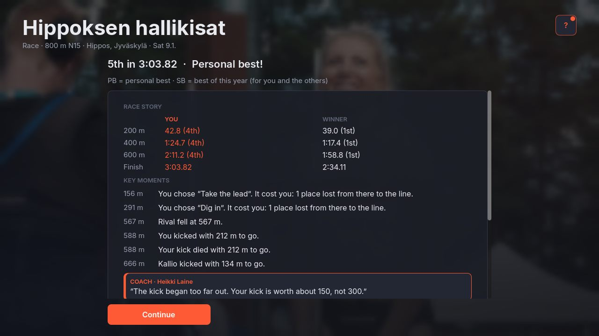
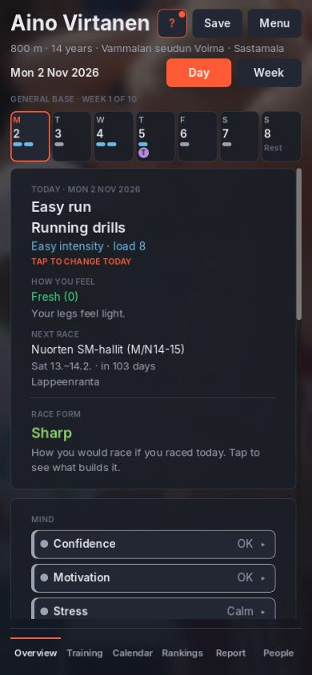
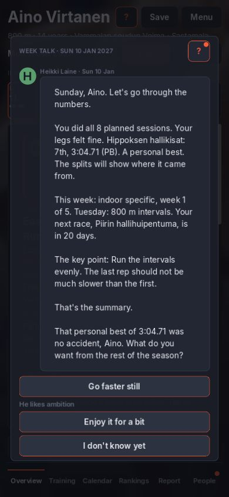

The same two screens in three looks: the Sunday week planner (GDD 4.10 decision 1) and the “what this race did” card, each at PC 1280×720 and phone 390×844. Every frame uses only what Godot draws well: flat or rounded panels, simple shadows, icons, bars, rings and small charts. Aino Virtanen and everyone in the frames are fictional, as all youth athletes in the game are.






| A · Stadium Night | B · Broadcast | C · Training App | |
|---|---|---|---|
| Reads at a glance | Good: bars, chips, icons; calm | Very good for numbers, weaker for sentences (caps, condensed) | Very good: big rings, few things per screen |
| Density on PC | High (FM-like) | Medium-high | Low-medium: needs more taps |
| Phone | Good | Good; big numbers read well small | Best: it is a phone look |
| Long sessions, evening play | Easy on the eyes | Easy, but the yellow tires if overused | Bright; would need a dark twin |
| Fits the race screen (R6) | Neutral | Same language as TV graphics: menus and race feel like one event | Weakest: races look like a fitness app |
| Distance from today / D28 | Small: D28 kept | Medium: D28 kept (dark), type changes | Large: D28 changed (light) |
| Godot work | Lowest (Palette + ThemeBuilder + icons) | Low + a second font, skewed StyleBoxFlat, segment bars | Medium: shadows, rings (draw_arc), two themes |
| Risk | Can still look like a spreadsheet | Gimmicky if every screen shouts | Least like a game |
Keep dark and FM-calm for the screens you read (planner, people, school, season), because it is easiest on the eyes over a long session and closest to what already works. Take B’s condensed numerals for every big number (times, places, %, countdowns), B’s straps for results, and the whole race result card in B’s broadcast style. Then the race (R6) and the menus speak one language: the career looks like the sport on TV, not like a spreadsheet and not like a fitness app. From C, take one habit: show fewer things, with “more” one tap away.
| Source | A week / plan | Body, fatigue, progress | Person, result, style |
|---|---|---|---|
| Football Manager 26 (desktop; tiles and cards) | Calendar: each day shows its training as a row of small icons, matches as coloured chips. Take: icons per session, words on tap. | Overview tiles that open a detailed card. Take: tile → card = our “tap for why”. | Deep navy, violet accent, striped attribute tables with coloured 1–20 numbers. Players disliked the new navigation (Steam reviews “Mostly Negative” at launch): keep our tabs predictable. |
| FM Mobile / Touch | The same data cut to one column; fewer columns, bigger rows. | Condition shown as a small heart / %. | Take: phone = one column of rows, never a squeezed PC table. |
| Athletics TV (World Athletics feed by Deltatre, Diamond League, Yle) | Start lists as straps: lane, flag, name, PB / SB. | Running clock, split boards, record-pace line. | Result straps: position box, name, time, PB / SB / NR tags; condensed caps, one bright highlight on dark. Take: straps and tags for results. |
| Strava | Weekly summary: distance, time, a bar per day. | Fitness & Freshness: fitness, fatigue, form over time as lines. Take: form = freshness + sharpness, trend lines in the Career tab. | White, one orange; PRs as small badges. |
| Garmin Connect | Calendar with coloured workout types. | Training Readiness, Body Battery: a score + a band colour + a one-line message; the home screen’s cards open the detail. Take: number + band + one line. | Dark mode, coloured gauges. |
| Runna | The week as a list of colour-coded workout cards with ticks; weekly total on top; move a run between days. | Plan progress bar. | Take: colour per session type, ticks for done. |
| WHOOP | No plan. | Recovery as a ring with green / yellow / red bands; strain 0–21. Take: three bands for body state. | Black, big rings, few words. |
| Mobile managers (Top Eleven, Motorsport Manager Mobile, Club Soccer Director) | One decision per screen, big buttons. | Bars for morale / condition. | Take little: monetised screens; their lesson is big tap targets and one action per card. |
Sources (read 2026-10-18): FM26’s reimagined UI (screenshots of the player profile, Portal and calendar); FM26 launch reception; Sega on UI feedback; Deltatre × World Athletics graphics; World Athletics Ultimate Championship graphics; Strava Fitness & Freshness; Garmin Training Readiness; Garmin Connect Essentials cards; Runna review; Runna screens; WHOOP 101. The TV and mobile-manager notes also draw on what these products look like in general, not on a published spec.